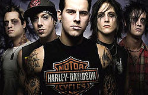
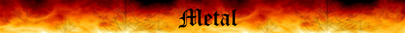
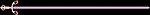

Avenged Sevenfold
 De: La Frikipedia, la enciclopedia extremadamente seria.
De: La Frikipedia, la enciclopedia extremadamente seria.
De la serie Grupos musicales:
Tenemos más paquete que nunca
| Origen
|
Américano
|
| Tiempo
|
1999 - (presente)
|
| Estilo
|
gay emo, electrónica, metalcore, hardcore, rap, punk rock, corridos, glam pop, , flamenco, cumbias, música sacra, folclórico, música de anime, canto tirolés, música de moros, salsa
|
| Discográfica/s
|
La WB que sale al comienzo de las pelis de harry potter
|
| Miembros
|
Zacky Vengeance, Johnny Christ, The Rev y antes había un bajista de nombre difícil de recordar
|
| Estado
|
Tiene una relación abierta con Gays
|
| Sitio web
|
{{{sitio web}}}
|
Avengay Semenflow Sevenfold es una banda de origen extraterrestre de género dudoso, que después del lanzamiento de un álbum nuevo nos lía incluso mas y nunca llegamos a estar seguros de qué son... pero por el momento los denominaremos banda de metaleros de 4ta. La banda con el paso del tiempo se han ido popularizando más y más en Gringolandia y en algunas tribus de Pitufilandia.
Historia
Todo se remonta a cuando comienza el Big Bang (ligera flatulencia de Chuck Norris) y la tierra fue dividida en dos grupos: los máquinas, y los reggaetoneros.
Y en el Año ẟæɒ̯ˌ' se formo la banda por cinco hombres, con mucha creatividad que se llamaría Afrenflas Avenged Semenflow Sevenfold o como los llaman los fans: ¡sevenfold! o simplemente "A7X". A sus comienzos, esta banda empezaría con un género muy parecido al metalcore Vayainascore lo cual según muchos fans sonaba a música amateur y por esa razón no se hizo muy popular con sus dos primeros álbumes; "Sounding the seventh trumpeth" y "waking the fallen" que en español significan :"Metiéndote la séptima trompeta" y "Wally te folla".
Sin embargo en el año 2005 A.C. si no recuerdo mal lanzaron el álbum "City of Evil". La idea es que con el álbum city of Evil dejaron ese chillido odioso de estilo metalcore y pasaron a un estilo todavía mas comercial.
Se hicieron tan populares que hasta salieron en la MTV (Mierda, tetas y vagin@s).
Después hicieron el 4to álbum que se llamaba "Avenged Sevenfold" y estuvo muy bien de hecho(Ya que Synyster Gates dijo que follaron mas que nunca y que ese era el objetivo de la banda) ... En 2010 sacaron su álbum "nightmare" con el cual follaron tanto que fueron los causantes de la superpoblación en China y parte de Villa Conejos de Arriba.
Su último álbum fue "Hail to the King" producto de una orgía infernal con sasha grey.
Posteriormente; sin nada que hacer, en el 2014 se dedicaron a recoger todas las grabaciones perdidas de "waking the fallen" y a hacer una versión discográfica de los juegos de FIFA (1993 - infinito). Así nació: "Wally te folla: Resucitado". Cabe recalcar que este no es un álbum de estudio. Éste álbum solo lo poseen los más jebis y fanboys de la banda ya que no trae nada nuevo.
En ese mismo año (sí que estaban aburridos) crearon un jueguito sobre su mascota favorita: Mathrius el Murciégalo; dedicado para los aun mas fanboys y frikis y en memoria de su demente amigo, The Rev.
Cualidades de la banda
 Ni siquiera por su look podemos determinar el gńero musical
La banda se caracteriza por las increíbles habilidades que tienen, como :
- Ser capaces de follar con sus instrumentos en vivo.
- Esquivar perfectamente la ropa interior lanzada al escenario en los repertorios.
- Hacen locuras con las que te descojonas y lo graban para colgarlo en youtube.
- La habilidad de coger con cualquier cosa y convertirlo en un disco.
- Romper mayor cantidad de sandillas con un mazo en tan solo 35 segundos.
- Johnny christ tiene la capacidad de no sobresalir en absoluto.
- Coleccionar cabezas de canis y ponerlas en su muro de trofeos.
- Abrir botellas de cerveza con zapatos o sandalia playera (a poder ser usada).
- Ser adolescentes que creen que saben tocar.
- No piden permiso a sus padres para salir a jugar.
- Se levantan a la hora que quieren porque son unos malotes.
- Pegar a Johnny Christ.
- Estampar contra la pared un par de guitarras y hacerlas mierda.
Miembros de la banda
- Synyster Gates (Siniestro el Puertas) (Supuesto guitarrista principal): Un joven muy apuesto que toca la guitarra bajo la inspiración de El Fary y Jose Luis Cobos; y además se dice que suele ligar mucho y en cada concierto se acuesta con una chica diferente (Malas lenguas dicen que entre sus putitas más famosas se encuentran Fred Durst y Paris Hilton). También se dice que ha llegado a tener sífilis, gonorrea, sida y muchas otras enfermedades pero se recuperó rezándole a la Virgen de Prado y a Mathrius .Tiene la capacidad de estrellar una guitarra en la pared y crear su "música".
- Matt Shadows (Mateo Sombritas) (Supuesto cantante principal): A pesar de no poseer testículos canta como un Dios pero no tan bien como Leonardo Dantés. A simple vista puede parecer un tío duro, pero en su casa se arropa con sábanas de seda y desayuna caviar con anabolizantes. Se encuentra bajo la protección de Alfonso IX, condeduque de Long Beach y actualmente reside en Taiwán. Corren rumores de que cada vez que canta, un niño africano sufre una convulsión.
- Zacky Vengeance (Zacarias Venganza) (Supuesto guitarrista secundario) : El segundo guitarrista que seguro finge que toca muy bien pero que no le notan ni aprecian mucho puesto a que Synyster siempre anda desnudo y desvia la atención, así que Zacalberto no destaca mucho pero sin embargo es vital para la banda debido a que junto con Siniestro el Puertitass se ponen en una posicion parecida al 69 en la que ponen cada guitarra mirando a lado opuesto y follan en el escenario, lo cual pone muy contento a Mateo Sombritas, que le gusta el rollo voyeur.
- The Rev (El Reverendo) (baterista y difunto del grupo) : Es el loco psicópata del grupo, curiosamente demostró tener mucho talento tocando la batería, y por lo tanto fue proclamado mejor baterista del mundo. Se dice que esta muerto, pero en realidad, está muerto, y te observa desde el cielo codo con codo junto a tu abuelo mientras en el cielo destrona a Jesucristo y el se proclama Dios
entonces toda la raza huma deja de ser creyente y todos sus frikis fans son felices.
- Johnny Christ(Juanito Christianito) (Bajista, enano y marginado del grupo) : de este no tenemos nada de informacion interesante aparte de que en un video se demostro que tiene una polla enorme. Sufre constantes abusos por parte de sus compañeros de banda, pero un día su ira estallará y tomará por el culo a los demás miembros de Avenged y les cortara la cabeza con su molona cresta.
- Arin Ilejay (Arito de Cebolla o Arin Ayayay) (Nuevo supuesto baterísta del grupo) Chico extraño del que no se sabe nada excepto que está esmirriado, que es del OPUS DEI y que es el hermano perdido de Ozil. Mateo Sombritas dijo un día de él que si volvía a robarle los anabolizantes le partiría los dientes con un zacho o en su defecto, con un macerero romano oxidado.
- Mathrius el Murciégalo (De la especie Deathbatus Cabronus) Es la mascota del grupo, una calavera con alas de murciégalo (no hay más) (en realidad sí. Se narra su vida y como perdió la virginidad y su reino entero, en el "jueguito" antes mencionado), cada día se turnan para sacarlo a pasear y que haga sus pipís y sus cacas por los parques de Honolulu. Cuenta la leyenda que fue capturado a golpe de cucharón sopero por The Rev después de encontrarlo completamente borracho, desnudo y sin identidad en una excursión que hizo a las Cataratas del Niágara, The Rev lo despojó de sus recuerdos lo enjaulo y se lo llevó. Actualmente se encuentra metido en una jaula a base de alpiste y Seven Up y sólo lo sacan para que estire las alas en los conciertos o para que Johnny Christ se lo folle a saco.
Miembros temporales
- Miguel Porno: entro después de que the Reverend, recibiera una patada giratoria por mofarse de la frikipedia así que don pornográfico entro a suplantarlo (lo que le costaria su estancia en su banda original drin twitter)
| 
|
 Subgéneros del metal 
Bandas
Personajes
Jebismo
El resto de cosas inclasificables
Portal
|
Autor(es):
- Fordus
- AlemanH
- Lord Black wizard
- Kevrochi
- Sdrf92
- Syncalvo
- Phoenix556
- Bladguer
- 62666
- Megadave107
Frikipedia 2005-2016, Licencia
GFDL 1.2 - Extraído por FrikiLeaks